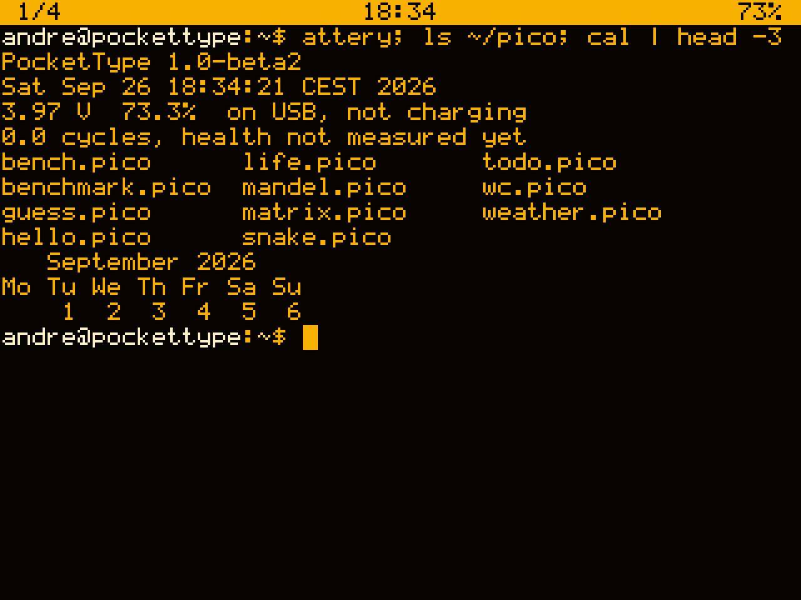
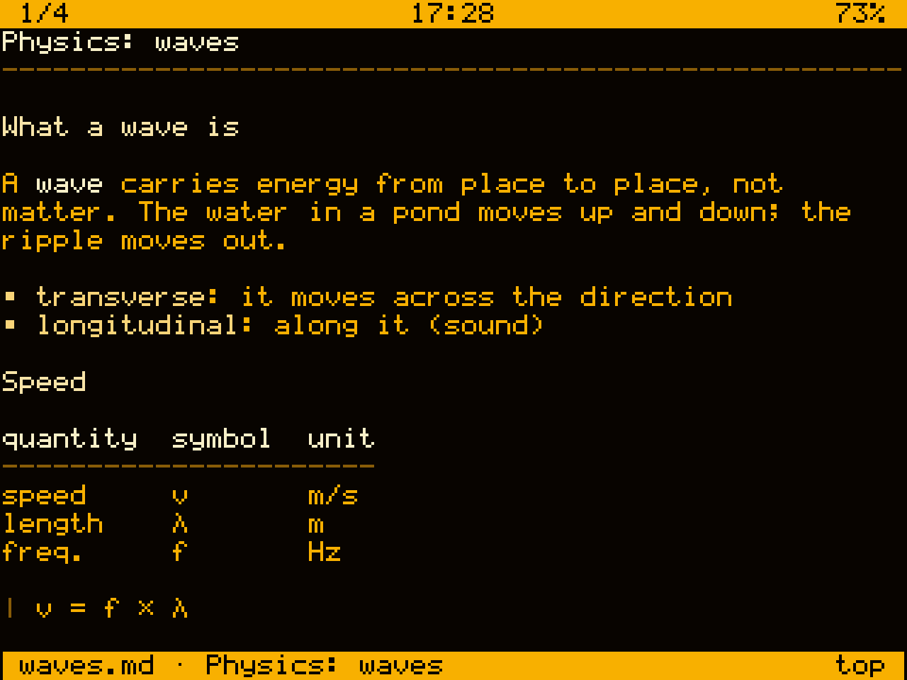
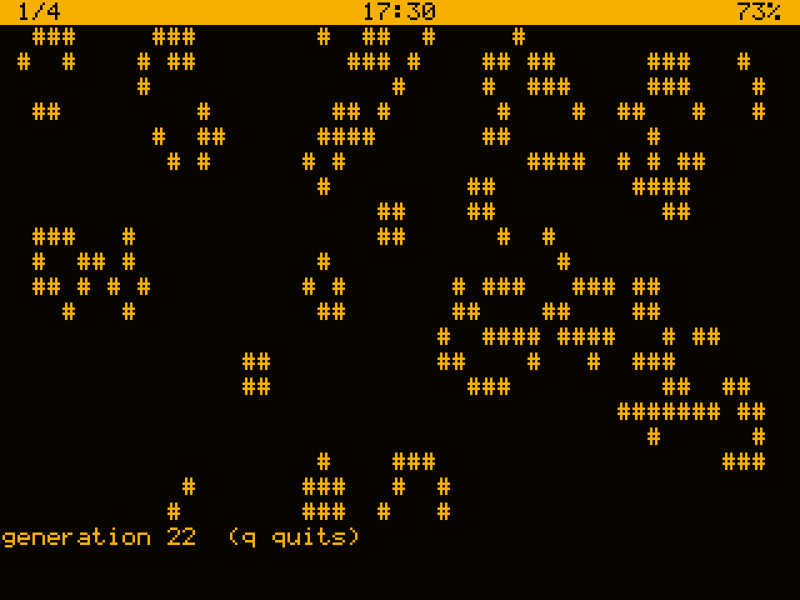
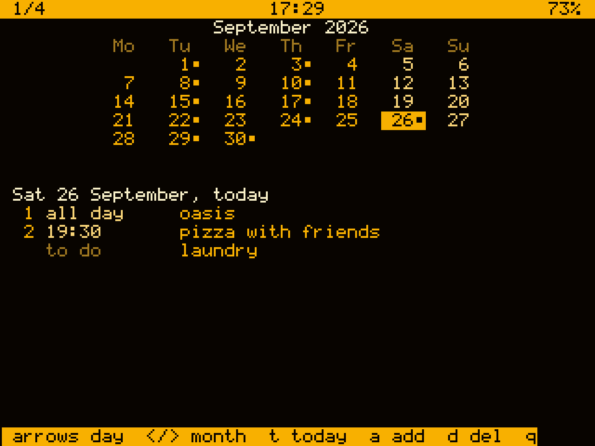
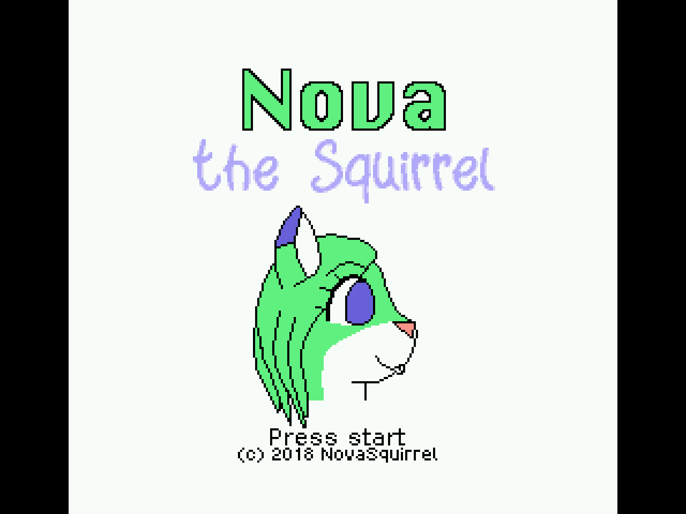
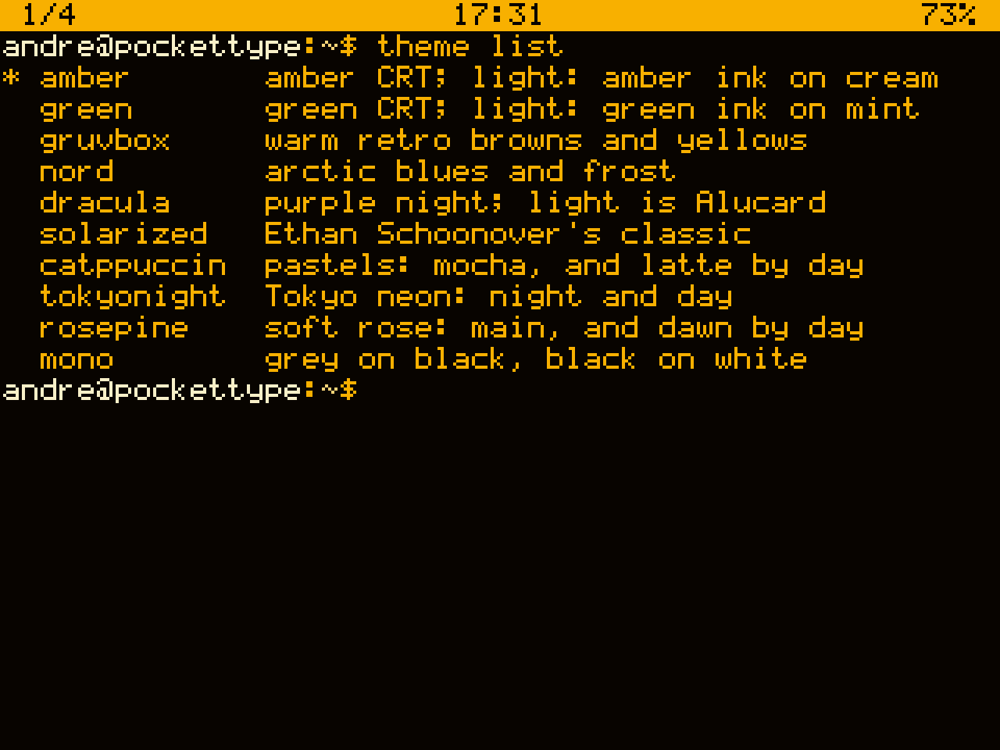

Part 1 of 2 · the machine
PocketType
the pocket guide

Part 1 getting started, keys, the shell,
power and battery, notes
Part 2 calendar, music, video, games,
the internet, looks, every command
1.0 beta 5
Contents
How to read it. commands look like this: type them and
press Enter. Fn X means tap Fn, let go,
then tap X. help and man on the machine say more
about everything here.
What it is
A computer that fits in a pocket, running a small Unix of its
own. You talk to it by typing; it answers in text, on four screens at once.
It keeps your notes, a calendar, a to-do list and alarms; it plays music
and video; it runs NES games; it reaches the internet over Wi-Fi; and it
has its own programming language, pico, with its own booklet.
What is in it
- brain
- ESP32-S3: two cores at 240 MHz, 8 MB of memory
- screen
- 2.8", 320 × 240, 53 × 23 letters
- keys
- the CardKB, a keyboard the size of a card
- sound
- a speaker, and a microphone
- storage
- a microSD card: all your files
- power
- a 2500 mAh cell, days of use
- radio
- Wi-Fi, and Bluetooth for a gamepad
Where things are
Your files are the SD card, which is your home, ~. Take it to a
PC and they are at the top of it.
- ~/music ~/video
- songs and clips
- ~/notes ~/photos
- notes to read, pictures
- ~/roms ~/pico
- games, pico programs
- /tmp
- scratch space, empty after every start
First steps
Waking it
Press any key. After three minutes without one the screen dims, after
four it goes dark: the next key only lights it again.
The bar
which screen (1 of 4) · the time · the next alarm
· the battery (⚡ while it charges) · Wi-Fi
A command
Type one and press Enter. Try these:
- ls
- what is here
- cd music
- go into a folder;
cd alone goes home
- play song.mp3
- play it
- cal
- this month
- battery
- how much is left
Help
- help
- every command there is
- help play
- what one does, and how
- man intro
- the manual, from the start
- Tab
- finishes what you are typing
The keyboard
There is no Ctrl key: Fn stands in. It is sticky, so
tap Fn, let go, then the key.
- Fn C
- stop what is running
- Fn Z
- pause it (
fg goes on)
- Fn 1–4
- screen 1 to 4
- Fn ← →
- the screen before, after
- Fn 5 6
- brightness down, up
- Fn 7 8
- volume down, up
- Fn 9
- sound off and on
- Fn 0
- doze: dark, all kept (page 7)
- Fn A ↑
- look back at what scrolled away
- Fn ↑ ↓
- start, end of the line
- Fn Del
- delete forwards
- Fn L
- clear the screen
- Esc
- clear the line; leave a program
- Tab
- finish a command or a name
- ↑ ↓
- what you typed before
- Sym
- the symbols printed on the keys
- Shift ×2
- capitals until pressed again
Brightness and volume are remembered for the
next start. On a USB keyboard, Ctrl is Ctrl, and Ctrl-A then 1–4 changes
screen.
Screens and the shell
Four screens, each with its own shell, all running at once: music on 1,
a game on 2, notes on 3.
Tab does the typing
- theme cuTab
- theme cursor
- play "OaTab
- the whole name, quoted
- video Tab
- only clips, and folders
When there are several it lists them; type more and Tab again.
Looking back
Fn A then ↑ scrolls back through what went
past; ↑ ↓ go on, Esc comes back. The bar
shows ↑22: that many lines back.
Several at once
- play x.mp3 &
- runs behind; the shell is free
- jobs
- what runs behind, or is paused
- fg / bg
- to the front, or on behind
- kill %1
- stop job 1
Plumbing
ls -l | sort -k5 -n | tail -3
grep -rn exam ~/notes > found.txt
find ~ -name '*.mp3' | wc -l
Power and battery
Three ways to rest
- Fn 0
- doze: dark and quiet, all
kept; a key and you are back where you were
- suspend
- sleep: any key wakes it, as a fresh start;
alarms still wake it
- poweroff
- deepest: only Enter wakes it
Left alone for 15 minutes with nothing running, it goes to
sleep by itself (power suspend 30m to change it).
Charging
Plug the charger module's own USB-C in: 1 A, full in about three hours.
The board's port runs the machine from the PC but does not charge.
How much is left
| doing | lasts, about |
|---|
| reading, screen at half | 1 day |
| music, screen dark | 30 hours |
| video or games | 12 hours |
| dozing | 3 days |
| asleep | 4 days and more |
battery -v tells all,
battery -l the log of starts and sleeps.
Notes
Put Markdown or text files in ~/notes (a folder for each
subject) and notes lists them; pick one to read it, laid out
for the screen: headings, lists, tables, quotes.

- Space B
- next page, back
- O
- the headings, to jump to one
- / N
- find a word, and the next
- + -
- brighter, darker, for reading in bed
- E
- open it in the editor
- Q
- close it; it reopens where you left it
Writing
edit FILE: FnS save, FnQ quit,
FnF find, FnG go to a line,
FnK cut, FnU paste, Esc all
of it in a menu.
Part 2 of 2 · apps and more
PocketType
the pocket guide

Part 2 calendar and to-do, alarms, music,
video and photos, games, Wi-Fi and files,
themes, when something goes wrong,
and every command on the back
1.0 beta 5
Diary

- calendar
- the month: arrows move, A adds, D deletes
- calendar agenda
- the week ahead
- calendar add 30/9 10:00 dentist !30
!30 chimes half an hour before; every mo,we
and yearly 2/10 repeat.
To do
- todo
- the list, to tick off
- todo add milk @fri
- or @today, @30/9
- todo done 1
- tick one off
Alarms
- alarm 7:00 mo-fr up
- every weekday
- alarm 25m tea
- a timer
- alarm
- what is set;
alarm rm 2
Ringing, any key snoozes it nine minutes and Esc stops
it. It rings even from sleep.
Music
- play song.mp3
- MP3, FLAC or WAV
- play ~/music/*.mp3 &
- a whole folder, behind
- jobs, kill %1
- what plays; stop it
- volume 60
- or Fn 7 8; Fn 9 mutes
Music plays on under whatever else you do, a game or a clip on another
screen included: the sounds are mixed. Let the screen go dark, or doze, and
it plays on for most of a day.
Recording
- rec memo.wav
- until Fn C
- rec -t 30 memo.wav
- thirty seconds
- play memo.wav
- hear it
- beep 880 200
- a note, for scripts
Getting music on
Copy files into music/ on the SD card from a PC, or send
one with make push FILE=song.mp3 DEST=~/music/song.mp3 (page 14).
Video and photos
- video
- pick a clip from
~/video
- Space
- pause: a bar shows where it is
- ← →
- 10 seconds back, on
- ↓ ↑
- a minute back, on
- 0–9
- 0% to 90% of the way in
- S
- keep the picture, in
~/photos
- Q Esc
- stop; next time it goes on from there
Making clips
The machine plays its own kind of file, made on the PC from any video:
make video FILE=film.mkv
then copy the .ptv from clips/ into video/ on the SD card.
Photos
- view
- JPEG or BMP from
~/photos
- ← →
- the one before, after
- screenshot
- the screen, kept as a picture
Games
A NES inside: put .nes games in ~/roms and
nes lists them.

Nova the Squirrel, a free game by NovaSquirrel.
- ←↑↓→ WASD
- move
- X Z
- the A and B buttons
- Enter
- start
- Space
- select
- P
- a screenshot
- Q Esc
- quit
nes -q plays without sound.
A gamepad
- pad on
- the Bluetooth radio
- pad scan
- look for one (press its pairing button)
- pad connect 1
- join it; remembered
More games, in pico: snake, life (pico booklet).
Internet and files
Wi-Fi
- wifi connect
- pick one from a list; remembered for next time
- wifi scan
- networks in range, numbered
- wifi
- what it is doing;
wifi off saves power
Joining sets the clock too; so does ntp.
- wget URL
- fetch a file
- curl URL
- what a web address answers
- ping HOST
- is it there?
- passwd
- then
telnet in from a PC, port 23
Moving files
Quickest: the SD card into a PC. Or, with the USB cable, from the PC's
pico-os folder:
make push FILE=notes.md
make pull FILE=/home/user/photos/shot-1.bmp
It goes beside the console: nothing is typed on the machine,
and you can go on using it meanwhile.
Looks, and when things go wrong

- theme list
- eleven themes, most dark only
- theme gruvbox
- switch;
dark or light after it
- theme auto 7 20
- light by day, dark at night
- theme set bg #102030
- a colour of your own
- rotate 180
- the screen the other way up
When something goes wrong
- dark screen
- press a key; Enter if it was off
- stuck program
- Fn C, or Esc
- ps / kill N
- see and stop what runs
- free, df
- memory, and room on the card
- dmesg
- what the system has been saying
- reboot
- start again (your files are safe)
factory-reset -y empties everything but Wi-Fi.
Every command
- alarm
- alarms and timers
- backlight
- brightness
- battery
- what is left
- beep
- a note
- cal
- a month, a year
- calendar
- the diary
- cat more
- show a file
- cd ls pwd
- folders
- cp mv rm
- files
- mkdir
- a new folder
- curl wget
- the web
- date
- date and time
- df free
- room left
- diff
- what changed
- dmesg
- system log
- edit
- the editor
- find
- look for files
- grep
- look inside them
- head tail
- ends of a file
- help man
- the manual
- jobs fg bg
- jobs
- kill ps top
- processes
- led
- the charge light
- nes pad
- games
- notes
- read notes
- ntp
- set the clock
- pico picoc
- the language
- ping
- is it there
- play rec
- sound
- power
- sleep times
- poweroff
- switch off
- reboot
- start again
- rotate
- turn the screen
- screenshot
- keep the screen
- sed sort
- change, order text
- suspend
- sleep now
- theme
- colours
- todo
- the to-do list
- uptime
- how long it's up
- video view
- clips, pictures
- volume
- loudness
- wc
- count words
- wifi
- the network
help lists all of them, and
help NAME says how to use one.